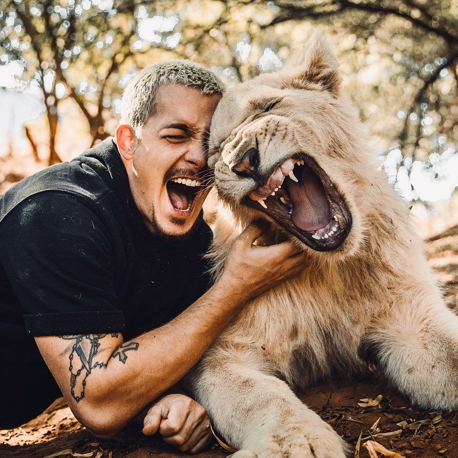
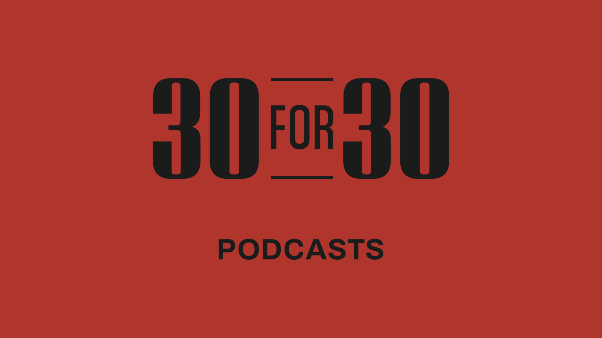

Productivity booster for COVID-19 WFH
Study shows that it is important to keep a tight daily schedule and take real breaks when working from home during quarantine. Here are some suggestions of what you can do during work day breaks.
AnimalsDean Schneider: A swiss born finance guy moved to south Aftica to save wild animals.
Tucker Budzyn: Youtube star The Golden Pup
Gohan The Husky: Youtube Star Gohan The Husky
Sports30 for 30: ESPN's 30 For 30 modern sports podcasts' self-contained stories on subjects ranging from the historic Yankees-Red Sox rivalry to the first all-women’s expedition to the North Pole.
Men in Blazers: Two dry-witted British expats get together weekly to discuss sports.
Spirit LiftingOprah's SuperSoul Conversations: Winfrey encourages listeners to “take time to be more fully present” and “more connected to the deeper world around us.”
On Being: Exploration of what it means to be human and live well, through conversations with scientists, artists, politicians and more by Krista Tippett